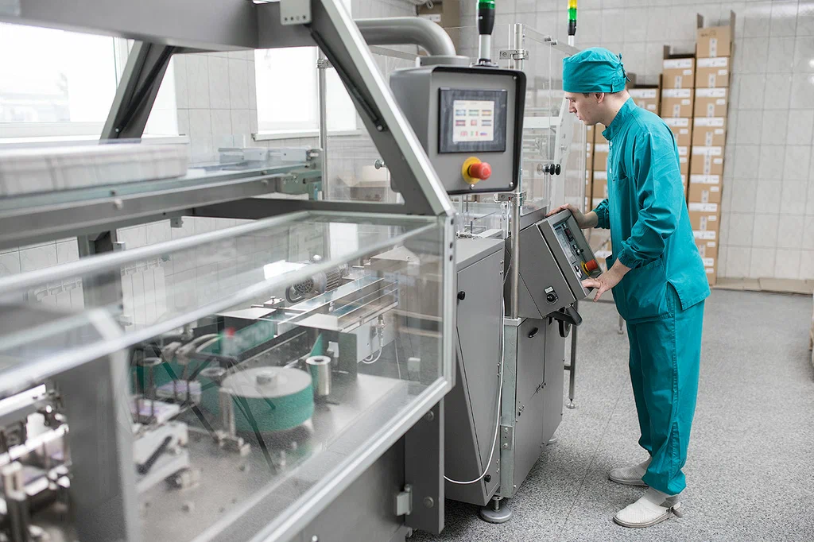

Новосибхимфарм динамично развивающаяся компания. Мы ориентируемся на энергичных,
высокопрофессиональных сотрудников.
Команда Новосибхимфарма –это в первую очередь команда едино мышленников, ставящих перед собой
основной целью выпуск качественной и безопасной продукции.
Мы смело смотрим в будущее и рады видеть в наших рядах молодых специалистов, готовых расти и
развиваться вместе с нами. На базе предприятия проходят практику десятки студентов ВУЗов, колледжей,
техникумов и т.д. Мы готовы делиться знаниями и растить будущее поколение высококлассных
специалистов.

Уполномоченный по фармаконадзору
Обязанности:
Поддержание в актуальном состоянии существующей системы фармаконадзора в соответствии с правилами
надлежащей практики фармаконадзора ЕАЭС;
Сбор и анализ данных по безопасности применения лекарственных средств;
Участие в исследованиях безопасности лекарственных средств;
Работа с индивидуальными сообщениями о нежелательных реакциях;
Выявление и обработка сигналов по безопасности лекарственных средств;
Подготовка документов для внесения изменений в регистрационное досье лекарственного препарата по
причинам, связанным с безопасностью;
Взаимодействие с регуляторными органами, медицинскими и фармацевтическими работниками в части
обеспечения безопасности лекарственных средств;
Подготовка периодических отчетов по безопасности, планов управления рисками, мониторингов
безопасности, отчетной документации по безопасности для регуляторных органов;
Заключение необходимых договоров.
Требования:
Высшее образование (медицинское, фармацевтическое, химическое, биологическое);
Обязателен опыт работы в системе фармаконадзора (теоретические знания и практический опыт в области
осуществления деятельности по фармаконадзору), знание законодательства в данной области.
Просмотрщик ампул
Обязанности:
Натирка и просмотр ампул с инъекционными растворами;
Контроль качественных ампул от некачественных;
Влажная уборка в начале и в конце смены;
Требования:
Без опыта работы.
Усидчивость и внимательность.
Менеджер снабжения
Обязанности:
1. Организация и контроль поставки сырья и материалов на производство;
2. Переговоры с Российскими и иностранными поставщиками;
3. Заключение договоров, поиск альтернативных поставщиков, улучшение условий работы с существующими
поставщиками;
4. Анализ цен и мониторинг рынка;
5. Контроль остатков, расчет потребности сырья.
Требования:
1.Высшее образование;
2. Базовый английский;
3. Опыт работы от 1 года в должности менеджера по снабжению;
4. Опыт проведения переговоров;
5. Умение анализировать и проводить мониторинг рынка;
6. Уверенный пользователь MS Office.
Оператор производственной линии
Обязанности:
Обеспечение бесперебойной работы производственной линии;
Контроль технологических параметров процесса;
Обеспечение качества выпускаемой продукции;
Выполнение производственных сменных заданий.
Требования:
Без опыта (ОБУЧАЕМ)!
Внимательность, ответственность, дисциплинированность.
Электрогазосварщик
Обязанности:
Проведение подготовительных работ перед сваркой;
Выполнение электрогазосварочных работ на трубопроводе Х.В.С., Г.В.С., пар, конденсат, работы на
трубопроводах разного диаметра (от 15мм до 200мм), газорезка.
Требования:
Умение читать чертежи;
Знать слесарного дела.
Юрисконсульт
Обязанности:
Разработка и согласование локальных нормативных актов (положений, регламентов, инструкций, приказов,
распоряжений);
Разработка и правовая экспертиза хозяйственных договоров (купля-продажа, поставка ( в том числе и
внешнеэкономические контракты), подряд, услуги, аренда, агентские договоры, кредитные договоры, договоры
залога, договоры ипотеки, страхования, транспортно-экспедиционной деятельности, договоры перевозки и
т.д.);
Экспертное оказание правовой помощи структурным подразделениям компании.
Требования:
Высшее юридическое образование;
Опыт работы от 3 лет в должности юрисконсульта;
Знания корпоративного права, ГК РФ, КоАП РФ, ГПК РФ, АПК РФ.
Умение выстраивать конструктивный диалог с руководителями/коллегам;
Умение пользоваться справочно-правовыми системами;
Навыки делового общения и письма;
Навыки составления договоров, претензий;
Способность к анализу рисков компании и разработка мер по их минимизации;
Внимательность, ответственность, организованность, ориентация на достижение результата;
Контроль и оценка исполнения.
Специалист по разработке документации
Обязанности:
Оформление и разработка технологической документации.
Требования:
Среднее профессиональное образование: технолог.
Опыт работы на производстве будет вашим преимуществом.
Слесарь по ремонту и обслуживанию оборудования
Обязанности:
Обеспечение безаварийной и надежной работы систем вентиляции, холодоснабжения, компрессорного,
вакуумного, газового (ГРП), кислородного оборудования;
Проведение работ по техническому обслуживанию систем вентиляции, холодоснабжения, газового,
компрессорного, вакуумного, газового (ГРП), кислородного оборудования,
монтажные работы.
Требования:
Опыт работы в должности слесарь по ремонту и обслуживанию оборудованию;
Опыт в обслуживании, систем вентиляции, газового (ГРП), кислородного оборудования
Старший бухгалтер
Обязанности:
Учет движения материальных ценностей и полуфабрикатов, спецодежды (перемещение, списание, сверка
остатков) на складах и в производстве;
Проведение и оформление результатов инвентаризаций МЦ (ежемесячная прекурсоры, годовая, внеплановая при
смене МОЛ);
Учет расходов вспомогательных производств;
Обработка производственных отчетов;
Расчет себестоимости готовой продукции;
Выдача доверенностей;
Оформление документов;
Учет операций по прочей реализации.
Требования:
Свободное владение ПК, EXСEL, WORD;
Знание бухгалтерского учета, ФСБУ, НК;
Умение работать в бухгалтерских программах;
Опыт проведения инвентаризаций.
Рабочий по ремонту и обслуживанию зданий
Обязанности:
Осуществлять покраску, лакирование поверхности, готовить поверхности под покраску, осуществляя операции
по шлифовке, полировке, шпаклевке, грунтованию и т.п.;
Осуществлять защитное покрытие поверхности специальными растворами, жидкостями, смесями;
Выполнять работы по оштукатуриванию поверхности, ремонта штукатурки, оштукатуривания поверхностей
декоративными растворами и растворами специального назначения;
Осуществлять оклейку поверхности обоями и другими искусственными покрытиями;
Исполнять работы по облицовке, в том числе декоративной облицовке, ремонту, замене, разборке плитки
различного ассортимента;
Готовить окрасочные составы, цвета, клея, штукатурные, специальные растворы и т.п;
Выполнять установку оконных и дверных коробок, подоконных досок и плит;
Работа с подвесными потолками на металлическом или деревянном каркасе;
Работа по устройству бетонных и цементно-песчаных стяжек пола;
Работа по наклейке линолеума;
Монтаж подсистемы из металла или дерева и облицовка поверхностей листами ГВЛ и ГКЛ.
Требования:
Опыт в проведении ремонтов помещений (отделочные работы), навыки по всем типам ремонтных отделочных
работ (универсал).
Слесарь-ремонтник
Обязанности:
Ремонт и обслуживание технологического оборудования, технологических линий.
Наладка оборудования, дефектовка, восстановление и ремонт изношенных деталей и узлов.
Требования:
Опыт наладки и ремонта оборудования.
Чтение машиностроительных чертежей, навык работы на металлообрабатывающем оборудовании (сверлильный
станок, наждачный станок, углошлифовальная машина, ручная электродрель.
Знание работы с измерительным инструментом штангельциркуль, микрометр, твёрдомер.
Химик группы промышленного контроля
Обязанности:
Обеспечивать своевременное и надлежащее выполнение физико-химических испытаний полупродуктов и готовой
продукции на стадиях технологического процесса.
Оформление полученных результатов, протоколов и отчетов
Требования:
Высшее химическое, среднее профессиональное фармацевтическое, химико-технологическое образование
Знание основ аналитической химии.
Преимущество для соискателей с опытом работы в аналитической лаборатории, навыками работы на
лабораторном оборудовании: весы, рН-метр, спектрофотометр.
РАССМАТРИВАЕМ ВЫПУСКНИКОВ ВУЗОВ БЕЗ ОПЫТА РАБОТЫ. Обеспечиваем: обучение с наставником и поэтапной
наработкой практических навыков, обучение во внешних организациях.
Возможность карьерного роста.